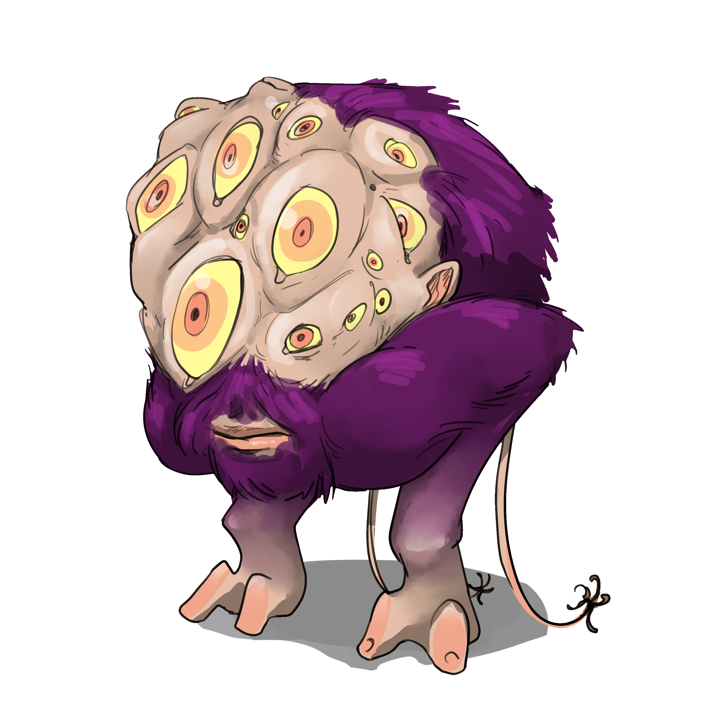

👁️ Eye Knobbler

Hook: After a long rest, all players make a Luck check. The lowest roll wakes up with their eyes missing—no blood, no pain.
Description: A squat, purple-furred creature with dozens of yellow-ringed eyes twitching over a swollen scalp. It murmurs in a nasal lisp and scuttles with soft, padded limbs. Eyes blink independently, watching everything—especially the ones it hasn't stolen yet.
- 🧟 Roleplay: Cowardly when cornered. Offers “trades” for survival. Magical eyes only offered when dying.
- 🎲 Mechanics:
- Silence: Casts Silence to bypass alarms.
- Shadow Slip: Teleport short range between shadows.
- Harvest: Eats normal eyes. Stores magical ones.
- Stat Block: PL 5 | Stealth +8 | Spirit +4 | Claw [[2d6]] + Blind on success+.
- ⚔️ Encounter Flow:
- One player wakes eyeless.
- Clues lead to tunnels & twitching shadows.
- Stealth or surprise combat possible.
- At 0 wounds: it bargains for life using Magic Eyes.
🎁 Magic Eyes (Roll d10)
- Red Lilac Eyes: +2 Observation. 1/day as an action, your eyes flare bright red; you and another creature gain the Exposed condition until the end of each of your next turn's.
- Gold Cinder Eyes: +2 Influence. When lying or deceiving, on a success+, your words implant a false memory. On a failure, take the Disoriented condition until your next turn.
- Obsidian Prism Eyes: +2 Spirit. You can see invisible creatures, but each time you do, you might take 1 psychic damage from "what sees you back."
- Hollow Teal Eyes: Immune to fear. 1/day, reflect a Fear condition back at the source within short range as an off-action, but take [[3d4]] psychic damage.
- Amber Pulse Eyes: Immediately at the start of combat, take an action. Afterward, gain the Stunned condition until the end of your next turn.
- Frost Glass Eyes: Immune to ice damage but suffer half low light vision.
- Emerald Rift Eyes: +2 Observation. 1/day as an action, see a random location somewhere in the realm you are currently in.
- Violet Spiral Eyes: 1/day, cast one spell of your choice without cost. Make an Intellect check; on failure, gain the Confusion condition permanently.
- White Mirror Eyes: See truth in all forms. 1/day as a half action, observe a creature, object, or location within long range as if within reach. Gain Exhaustion until the end of your next turn.
- Crimson Root Eyes: These eyes bear 3 teardrop shapes in the center. As an off-action, activate your Crimson eye; it stores the action of a creature to be used as your action on your next turn.